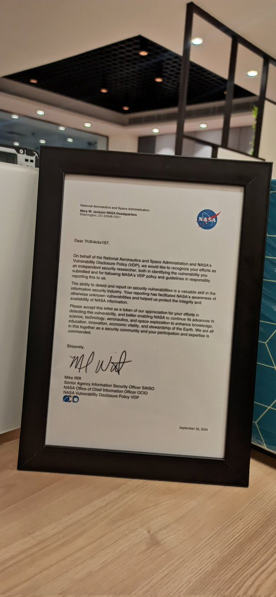

Cuando existe un agujero de seguridad en un sistema, un hacker tiene tres formas de proceder: aprovecharlo para beneficio propio o para una causa, encontrar una solución para después informar sobre ello o, simplemente, no hacer nada. Muchas grandes compañías cuentan con programa de recompensas para aquellos que encuentren vulnerabilidades, mientras que otras prefieren ofrecer un reconocimiento cordial, como es el caso de la NASA.
Conocido en redes como '7h3h4ckv157', ya es la segunda vez que hackea a la NASA para encontrar vulnerabilidades en sus sistemas e informar de ello a la agencia. Como reconocimiento de su labor, la agencia le envió una carta agradeciendo lo que hizo firmada por Mike Witt, responsable superior de seguridad de la información de la NASA.
